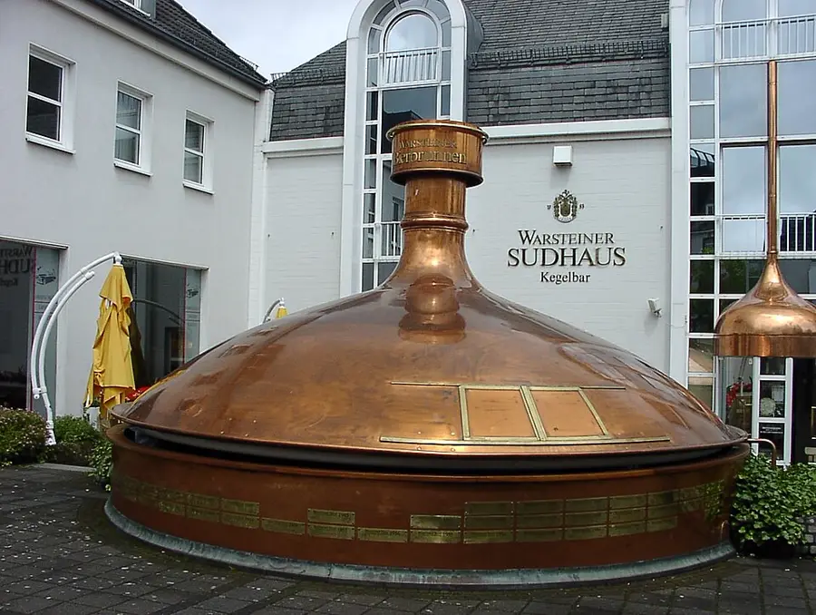

대표 로고대표 브랜드 마크
대표 로고대표 브랜드 마크바르슈타이너 Warsteiner
바르슈타이너(Warsteiner)는 독일 노르트라인베스트팔렌주 바르슈타인에서 양조되는 독일 맥주 브랜드이다. 1753년부터 크라머 가문이 소유해 왔다.
최종 업데이트
바르슈타이너는 어떤 브랜드인가
바르슈타이너(Warsteiner)는 독일의 맥주 브랜드이다. 맥주는 노르트라인베스트팔렌주 바르슈타인 외곽의 Arnsberg Forest Nature Park에서 양조한다.
크라머 가문이 1753년부터 소유해 왔으며, 독일에서 가장 큰 민간 소유 양조장이다. 독일 맥주 판매 순위에서는 5위에 오른다.
가장 많이 팔리는 맥주는 Warsteiner Premium Verum이다. 모든 맥주는 1516년 바이에른 순수령에 따라 양조한다.
바르슈타이너는 어떻게 시작되고 성장했나
기록상 가장 이른 언급은 1753년의 세금 기록이다. 당시 바르슈타인의 농부 Antonius Cramer가 직접 양조해 판매한 맥주에 대해 세금을 냈다.
아들 Johannes Vitus는 아버지의 뒤를 이어 수제 맥주 판매를 바르슈타인 중심부의 자기 집으로 옮겼다. 1802년 큰 화재로 바르슈타인이 폐허가 되면서 크라머 가문의 사업도 피해를 입었다.
이후 집을 숙박 시설로 다시 지었고, 양조장 본사인 Domschänke는 바르슈타인의 역사적 중심지에 지금도 남아 있다.
바르슈타이너의 브랜드 아이덴티티는 무엇인가
바르슈타이너는 1753년부터 같은 가문이 소유해 온 독일 최대의 민간 소유 양조장이다. 모든 맥주를 1516년 바이에른 순수령에 따라 양조한다.
바르슈타이너의 대표 제품과 서비스는 무엇인가
대표 제품은 필스너 스타일의 Warsteiner Premium Verum이며, 60여 개국에 수출한다. 알코올 도수는 4.8%이다.
두 번째로 인기 있는 Warsteiner Premium Dunkel은 전통 방식의 흑맥주로 도수가 4.8%이다. Warsteiner Premium Fresh는 유일한 무알코올 맥주로, Premium Verum과 같은 방식으로 양조한 뒤 알코올을 제거한다.
König Ludwig Weissbier는 천연 효모로 만든 황금빛 헤페바이젠이며 도수는 5.5%이다.
바르슈타이너는 지금 어떤 상태인가
바르슈타이너는 1980년대부터 맥주를 해외로 수출해 왔다. 아르헨티나의 Isenbeck 양조장과 아프리카의 양조장 등 해외 양조장을 설립하거나 지분을 인수하기도 했다.
북미에서 판매하는 제품은 모두 독일 바르슈타인 양조장에서 만든다. 일부 해외 시장에서는 Mahou-San Miguel Group이 Warsteiner와 Koenig Ludwig 맥주를 라이선스로 양조하며, 영국에서는 James Clay & Sons가 수입한다.
바르슈타이너 로고는 어떻게 변해왔나
대표 로고대표 브랜드 마크사진으로 보는 바르슈타이너의 역사

자주 묻는 질문
바르슈타이너는 어느 나라 브랜드인가요?
바르슈타이너는 독일의 식음료 브랜드입니다.
바르슈타이너의 브랜드 아이덴티티는 무엇인가요?
바르슈타이너는 1753년부터 같은 가문이 소유해 온 독일 최대의 민간 소유 양조장이다.
바르슈타이너의 대표 제품은 무엇인가요?
대표 제품은 필스너 스타일의 Warsteiner Premium Verum이며, 60여 개국에 수출한다.
바르슈타이너는 현재 어떤 상태인가요?
바르슈타이너는 1980년대부터 맥주를 해외로 수출해 왔다.
바르슈타이너의 본사는 어디에 있나요?
바르슈타이너의 본사는 Warstein에 있습니다(위키데이터 기준).
바르슈타이너의 공식 웹사이트는 어디인가요?
바르슈타이너의 공식 웹사이트는 http://warsteiner-gruppe.de/ 입니다.
출처와 검증
바르슈타이너 관련 참고: 공식 웹사이트 · 위키데이터 Q696787 · 한국어 위키백과 · 영어 위키백과. 브랜드명은 한글과 원어를 함께 표기하되 데이터에 없는 표기는 만들지 않습니다. 기원 국가·설립연도는 검수된 정의문에서 확인된 값을 우선하고, 없을 때만 공식 웹사이트 URL이 일치하는 위키데이터 개체의 값을 씁니다. 위키데이터 값은 2026-11-08 기준입니다.